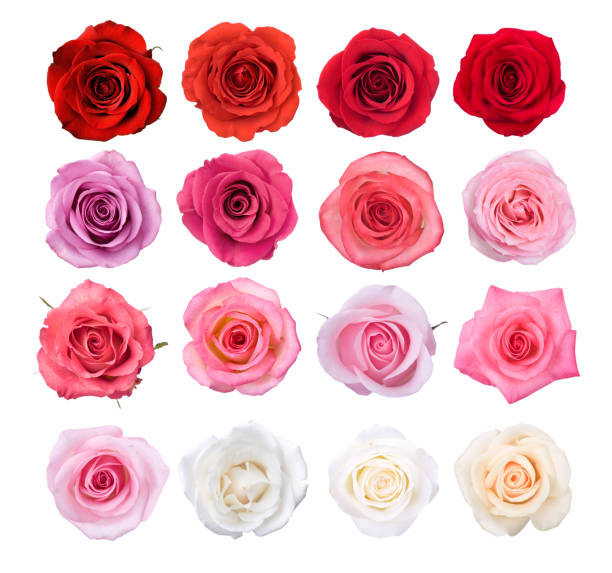
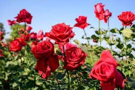

United States
National Flower — Rose
The rose is one of the most beloved flowers in the world, and in the United States it holds a special place as the official national floral emblem. With its timeless elegance and rich symbolism, the rose has represented American values of love, strength, and beauty for generations.


The Rose in American Culture
Roses have been part of American culture since the earliest colonial days, when settlers brought them from Europe and cultivated them in gardens across the new land. Over time, the rose became deeply woven into American traditions — given on Valentine's Day, carried in wedding bouquets, and placed at memorials to honor the fallen. Different colors carry different meanings: red for love and passion, white for purity and peace, yellow for friendship, and pink for gratitude and admiration. The rose appears in American poetry, art, and music, making it one of the most culturally significant flowers in the country.
Why the Rose is America's National Flower
On November 20, 1986, President Ronald Reagan signed a proclamation declaring the rose the national floral emblem of the United States. In his proclamation, Reagan noted that Americans have always loved roses, growing them in gardens from the Atlantic to the Pacific. The rose was chosen for its beauty, its deep roots in American history, and its universal symbolism of love and unity. It was seen as a flower that represented the American spirit — strong, open, and full of life.
Quick Facts
| Feature | Details |
|---|---|
| Scientific Name | Rosa |
| Common Colors | Red, pink, white, yellow, orange |
| Blooming Season | Late spring to fall (May – October) |
| Symbol of | Love, beauty, strength, unity |
| Declared National Flower | November 20, 1986 |
How to Care for a Rose
- Plant in a sunny spot with at least 6 hours of direct sunlight per day
- Water deeply at the base 2–3 times per week, avoiding wetting the leaves
- Use well-drained, fertile soil and add compost when planting
- Fertilize every 4–6 weeks during the growing season
- Prune in early spring to remove dead wood and encourage new growth
- Check regularly for common pests like aphids and treat with neem oil if needed
Watch a Rose Bloom
Watch the delicate petals of a rose slowly unfold in this beautiful time-lapse:
▶ Watch: Blooming Rose Time-Lapse — Philadelfos